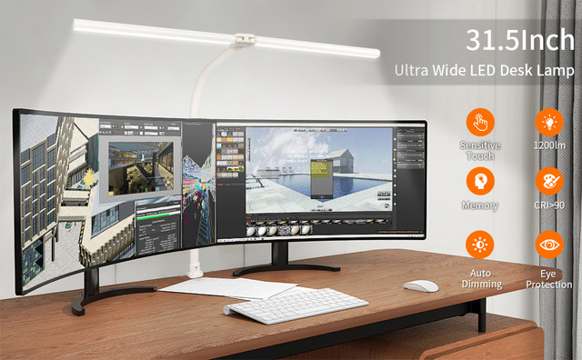
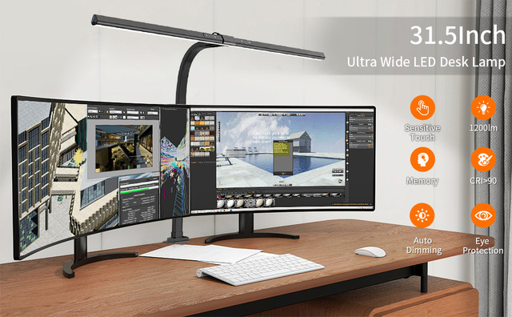
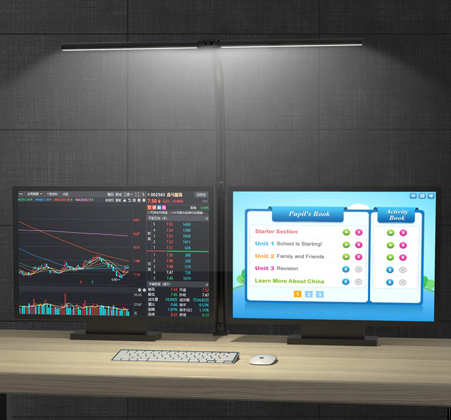
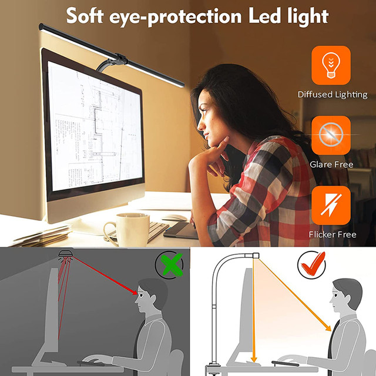
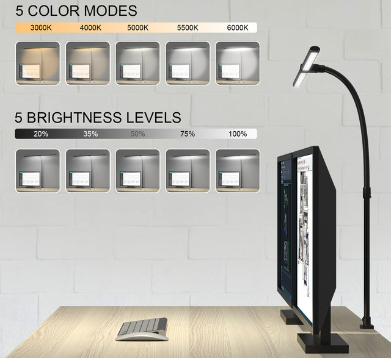
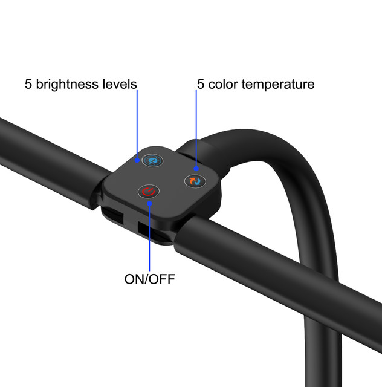
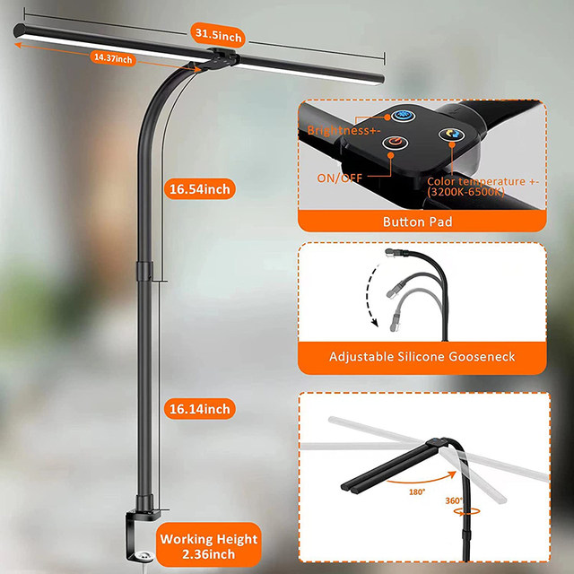
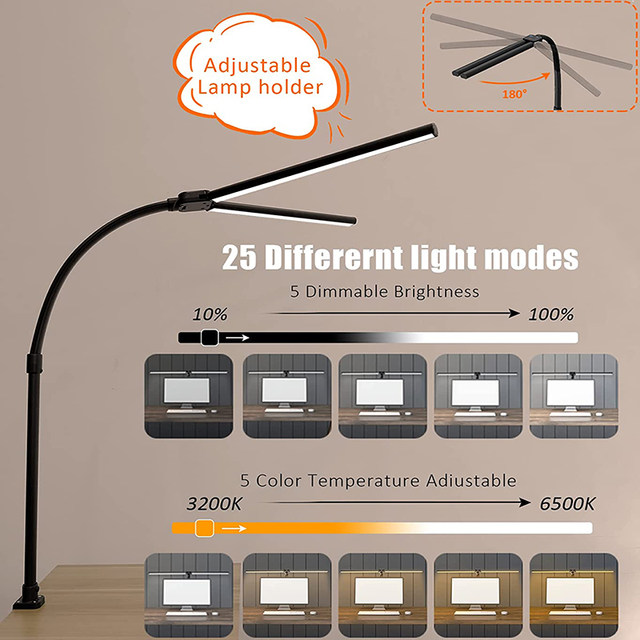
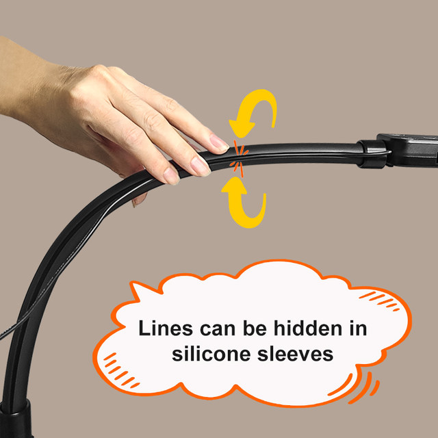

About this item
【Super Wide, Large and Bright】 This 24W LED desk lamp has a double head design that allows you to adjust the angle of the light bar. It can extend to 31.5 inches and fully illuminates the table. Suitable for multi-monitor workstation, home office, large desk, study, architect, computer, drawing, sewing, crafts, painting, reading, gaming, piano. Height up to 32.7 inches. The best LED desk lamp for working from home
【Press button Control】 With sensitive press buttons, the black table light can easy to control color temperature and brightness individually. It includes 5 dimming levels and adjustable 5 color temperatures modes (3,200 K-6,500 K). And the memory function remembers your last Settings. No flickering, no ghostly freezing, no screen glare
【Sturdy & Energy saving】The workbench light is made of aluminum alloy and ABS material. The work bench light is very durable and can last up to 50,000 hours.
【Modern looking & Saving Space】 Double head design + gooseneck design, the gooseneck desk lamp can be flexibly adjusted to 360° according to your needs. And swing arm desk lamps for home office adopts clamp design, so this small desk lamp is suitable for small space






